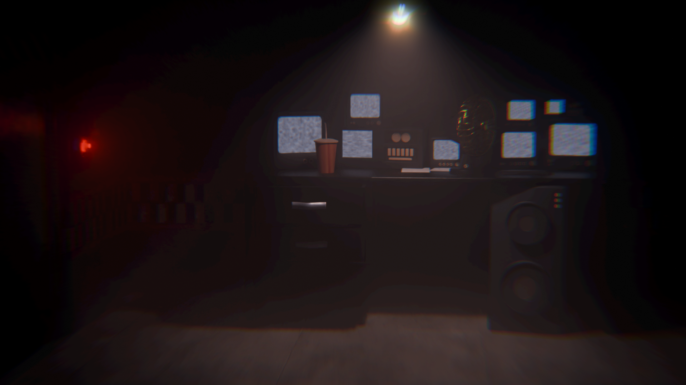
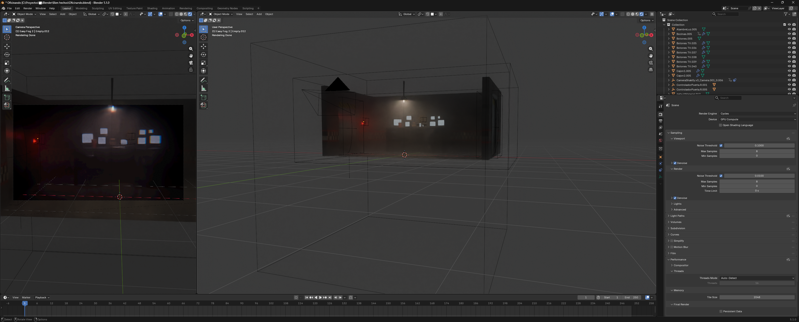
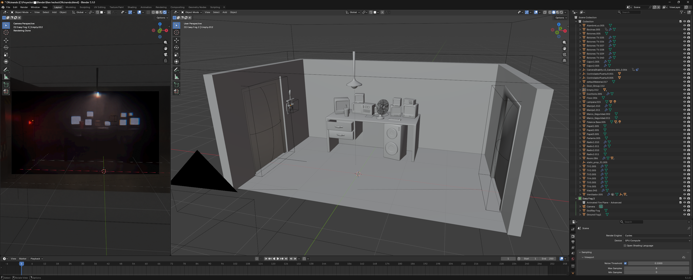
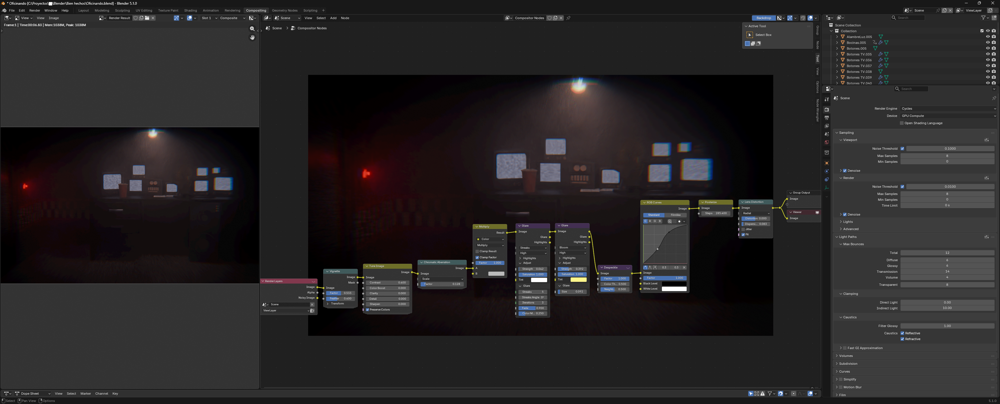

Oficina FNAF
Hace parte de un establecimiento más grande hecho para un tráiler de videojuego. El resto del establecimiento fue un trabajo colaborativo, por lo que no pienso tomar crédito único del sitio completo como tal, pero esta habitacion y todos sus props dentro de ella si los hice yo.

Como era para una animación, la mayoría de objetos tenían controladores para animarlos sin afectar al modelo en sí (puertas, ventilador, palanca). Además se mantuvo la geometría al mínimo sin sacrificar calidad para un renderizado más rápido (aun asi tomo decadas).
Al usar Cycles, pude añadir niebla volumétrica densa a la escena. Estos son los 2 cubos grandes que rodean la oficina: el grande es niebla general y el más pequeño simula polvo elevándose desde el piso.


NODOS DE COMPOSICIÓN
- Vignette | oscuridad en los bordes de la imagen
- Tune Image | aumentar el contraste general
- Chromatic Aberration | aberración cromática en pantallas y luces
- Multiply | oscurecer la imagen
- Glare (x2) | halo alrededor del bombillo y rayitos de luz
- Despeckle | reducir el ruido
- RGB Curves | ajuste de tonos individuales, toque rojizo
- Posterize | quemar la paleta para cortes en el degradado, efecto cámara barata
- Lens Distortion | distorsión de cámara con movimiento
